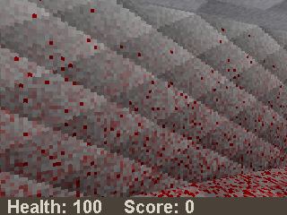
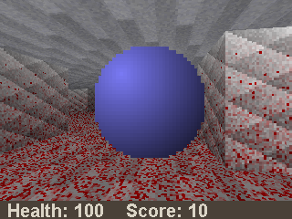
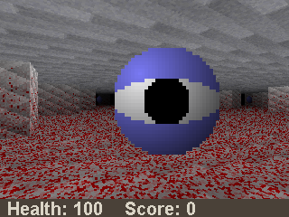

java -cp Hunters4k.jar D". If you wish to run Hunters4k in a window, run
"java -cp Hunters4k.jar D window" instead.|  |
WALL Walls block your passage. Neither you nor the hunters can pass these walls. |
|  |
SLEEPING HUNTER Sleeping hunters remain in place until shot. Walking into one will still hurt you. |
|  |
HUNTER Once a hunter is active, it will roam the halls, looking for ways to hurt you. Shoot a hunter five times to destroy it. |
| W: | Move forward |
| S: | Move back |
| A: | Move left |
| D: | Move right |
| ESCAPE: | Quit the game |
| MOVE MOUSE: | Turn around |
| LEFT MOUSE BUTTON: | Shoot |